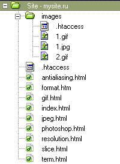
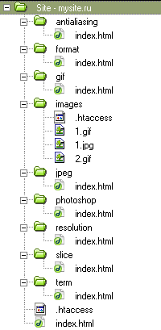

Структура файлов
С позиции разработчика, сайт условно можно подразделить на два уровня — логический и физический. На логическом уровне сайт представляет собой совокупность веб-страниц, объединенных между собой единым дизайном, стилем и ссылками. При этом на физическом уровне сайт является и набором файлов разного типа — в состав могут входить программы, документы, изображения и многое другое. Продумывание и создание удобной файловой структуры помогает не только разработчику оптимизировать свою работу, но и посетителю лучше понять строение сайта. Для простоты будем предполагать, что мы имеем дело с сайтом, который сделан с помощью html-файлов, без всякого веб-программирования. Прежде чем создавать в корне сайта папки и файлы, необходимо разработать структуру сайта — какие разделы и подразделы будут присутствовать, как они будут называться. Для примера приведем схему сайта посвященного оптимизации графики.
- Главная страница
- Форматы графических файлов
- Разрешение изображений
- Оптимизация в программе Photoshop
- Оптимизация формата GIF
- Оптимизация формата JPEG
- Антиальясинг
- Разрезание изображений
- Список терминов
Каждый раздел представляет собой один HTML-документ, который следует создать и дать ему имя. Имена файлов лучше называть латинскими символами без пробелов в нижнем регистре. Такой подход гарантирует универсальность и работоспособность на разных платформах. Прежде, чем присваивать имена файлам, следует учесть некоторые настройки веб-сервера, под руководством которого будет работать сайт. Сюда входит: какой файл будет загружаться первым, будет ли закрыт доступ к отдельным файлам, как будет осуществляться отслеживание ошибок и другие подобные вопросы.
Какой файл загружать первым
Обычно просмотр сайта начинается с главной страницы. При обилии в корне сайта различных файлов, как веб-сервер узнает, что ему загружать автоматически? Конечно, если путь к файлу указан напрямую, никаких вопросов не возникает. Но в большинстве случаев, адрес сайта указывается коротко, без лишних файлов на конце. Вот тогда читаются настройки сервера и определяется файл, который следует показать, а также, есть ли указанный файл в наличии. Как правило, такой файл имеет имена index.html, index.htm, default.htm, в общем, список можно продолжить. Чтобы не усложнять себе жизнь вычислением, какой же файл главнее, это можно установить самому, используя для этого файл .htaccess, размещая его в корне сайта. Данный файл является конфигурационным для популярного веб-сервера Apache и представляет собой обычный текстовый документ.В нем следует прописать такую строку.
DirectoryIndex index.html index.htm
Где через пробел указываются имена файлов, которые следует просматривать на предмет наличия и запускать автоматически. После этого, при указании пути к разным файлам и папками, в браузере будут открываться документы.
- файл .htaccess пишется без всякого расширения с обязательной точкой в начале имени;
- .htaccess может не работать на некоторых серверах;
- неполные пути, как показано в таблице, работают только под управлением веб-сервера, на локальном компьютере этот фокус не пройдет;
- если файл index.html отсутствует в указанной папке, браузер покажет список файлов, которые в ней содержатся.
Запрет доступа к папкам
Чтобы запретить посетителям смотреть информацию в отдельных папках на сайте, что иногда бывает необходимо для ограничения доступа к служебной информации и повышения безопасности сайта, есть два основных способа. Первый — создать пустой файл index.html и поместить его в нужную папку. Как было указано выше, этот файл будет загружаться в первую очередь при выборе пути к папке. А раз он пустой, то и увидеть ничего лишнего не удастся. Второй способ — использование опять же файла .htaccess, который следует разместить в нужной папке. Не стоит удивляться, это универсальный файл и размещаться он может в любом количестве и в любом месте сайта. В нем надо написать следующую информацию.
Options -Indexes
Когда браузер открывает папку, в которой содержится такой файл .htaccess, посетитель увидит предупреждение об ошибке с номером 403, означающую, что доступ в данное место запрещен.
Изображения
Все изображения, применяемые на веб-страницах, принято хранить в папке с именем images или img. Такая традиция систематизирует материал, разбивая его на блоки. Получается, что для картинок предназначено одно место хранения, для скриптов — другое, для стилей — третье.
Отслеживание ошибок
При правильном создании всех ссылок никогда не возникают, так называемые, «битые ссылки», когда ссылка ведет на файл, путь к которому или его имя указано неверно. Однако данная ошибка с номером 404 может возникнуть и просто, когда неправильно пишут адрес страницы. В этом случае, хорошо бы подсунуть пользователю сообщение об ошибке, чтобы не беспокоился и верил, что все можно поправить. Для этого создают отдельную веб-страницу, которая будет показана как раз при возникновении подобной ошибки. Связать воедино процесс возникновения ошибки и наш файл можно опять же с помощью корневого .htaccess. В него добавляется следующая строка.
ErrorDocument 404 /err404.html
Файл называется err404.html и размещается в корне сайта, слэш (символ /) перед именем файла пишется обязательно.
Файловая структура сайта
Вернемся теперь к сайту, файловую структуру которого следует создать. Здесь существует два различных подхода. В первом случае, каждому разделу соответствует html-документ, находящийся в корне сайта. Путь к нему будет выглядеть как www.mysite.ru/optimize.html. Альтернативный вариант — создание папок, которые будут соответствовать определенным разделам. В каждой папке размещается файл index.html. Поскольку этот файл указывать в адресе не обязательно, то путь будет выглядеть как www.mysite.ru/optimize. На рис. 1 и рис. 2 показаны два набора организации файлов на сайте.
 Какую структуру предпочесть зависит лишь от воли создателей сайта.
Дополнительные файлы
На любом сайте не обойтись и без дополнительных файлов, обычно размещаемых в корне сайта. Сюда входят файлы, предназначенные для выполнения определенных задач и имеющие обязательное имя, а также файлы, имя которых определяется разработчиками.
Обязательные имена
index.html — название главной страницы, а также веб-страниц, размещаемых в папках, которые должны открываться при их указании в адресе. Это имя, как уже упоминалось, может меняться в зависимости от типа веб-сервера и его настроек. Но обычно оно именно такое. .htaccess — конфигурационный файл веб-сервера Apache. Указанный сервер является наиболее популярным и распространенным в мире, поэтому и данный файл можно встретить повсеместно. Бывают, конечно, исключения. robots.txt — файл, предназначенный для поисковых систем. При индексировании сайта, в первую очередь ищется он. Пример запрета для всех поисковых систем посещать папки сайта cgi-bin и images.
User-agent: *
Disallow: /cgi-bin/
Disallow: /images/
favicon.ico — иконка сайта, она появляется возле адреса сайта при занесении его в раздел «Избранное» браузера. Это рисунок размером 16 на 16 пикселов формата ICO.
Необязательные имена
Таблица стилей — ни один сайт уже не обходится без стилей, обычно размещаемых в отдельном файле. Такое размещение дает несколько преимуществ — легко изменять вид элементов на всех страницах, меняя параметры лишь в одном месте, файл кэшируется и загружается быстрее, уменьшается общий объем всех документов. Файл со стилем обычно имеет расширение css.
Заключение
Хотя имена некоторых служебных файлов зависят от настроек сервера и могут меняться от сайта к сайту, приведенные принципы характерны для большинства из них. Для динамических сайтов, содержание которых формируется с помощью программы, так называемого «движка», структура будет несколько отличаться от приведенной. Однако и в этом случае, служебные файлы, такие как таблицы стилей, .htaccess, favicon.ico, robots.txt останутся на месте.